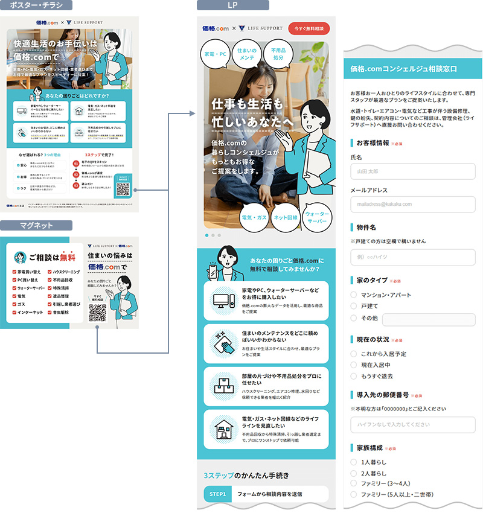

不動産系の新規プロジェクトの立ち上げに参加。オフラインで使用する印刷物とそこからサービスへ誘導するLP制作までのディレクションを担当しました。
担当
制作進行管理 / 企画連携 / 仕様策定 / ワイヤーフレーム / コーディング / Googleフォーム埋め込み
使用ツール
Figma / Cursor
制作フロー
キックオフからリリースまで1か月半弱の行程で進行しました。
- 他事業部の企画担当より要件をヒアリングし、スケジュールを作成
- 企画担当と仕様を策定し、ワイヤーフレームを作成
- デザイン担当に制作指示（デザインは企画担当および外部事業者確認を経てFIX）
- デザインをもとにコーディング（Googleアンケートフォームの作成と埋め込み含む）
- アンケートの動作確認と最終調整
- ポスター・チラシ・マグネットのワイヤーフレーム作成
- デザイン担当に制作指示（デザインは企画担当および外部事業者確認を経てFIX）
- 印刷物の発注手配
- LPの公開および印刷物の納品にて完了
所感
カスタマージャーニーをしっかり作ることを目的とした施策案件だったため、短い期間で試行錯誤しながらの制作となりました。
一番の課題となった制作工数の少なさについては、ワイヤーフレームの段階から常に2～3パターン用意し、要件に一番近いものをブラッシュアップしていく方法を取ることで確認・修正のやり取りを減らすことができました。
また、申込フォームは予算および工数削減のため社内のエンジニアに依頼せずGoogleフォームの埋め込みで対応しています。
短納期ではありましたが現地の事業者の方のご意見も反映させることができ、ご満足いただけたとのフィードバックもありました。
リリース後の改善施策を立てたのち、現在は担当を引き継いでしまいましたがとてもやりがいのあるプロジェクトでした。
※LPページへの導線が限られており、限定公開に近いためスクリーンショットのみとなります。